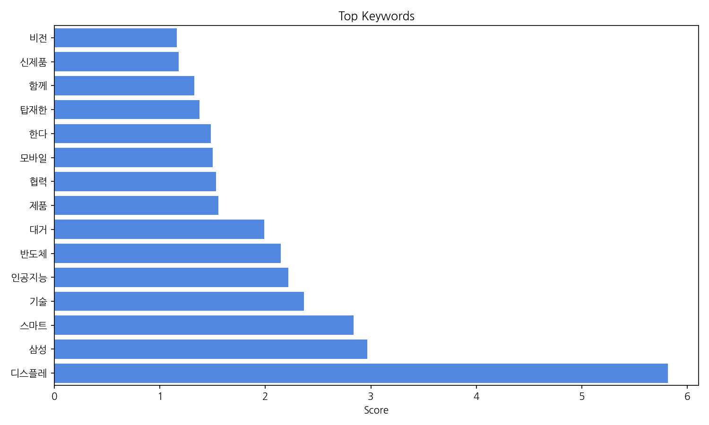
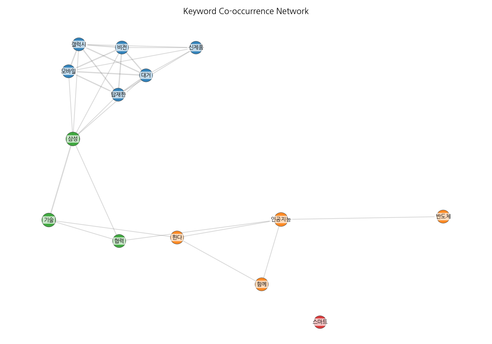
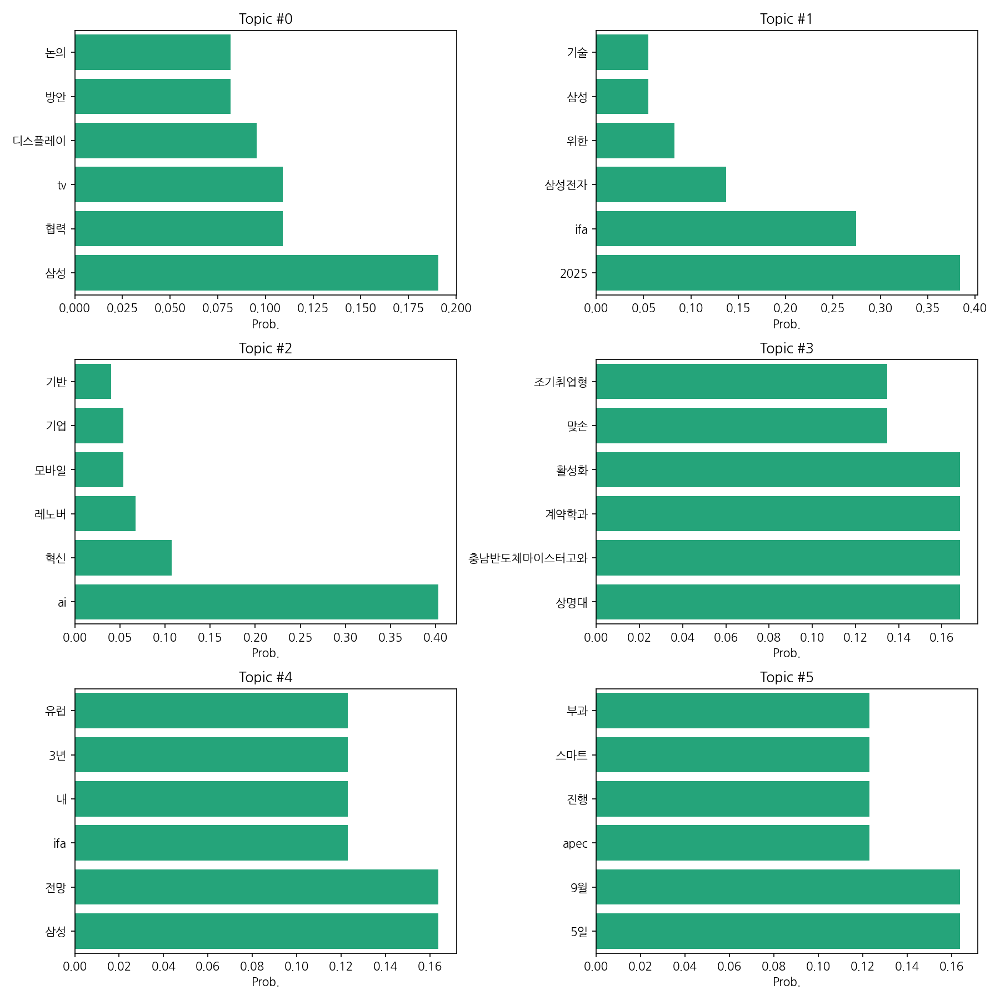
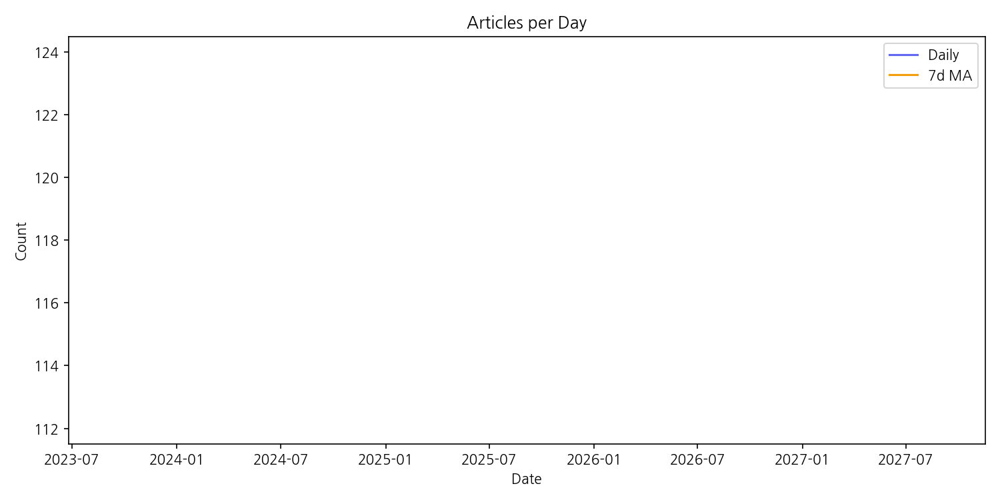

지난 기간 뉴스 트렌드는 삼성전자 중심의 디스플레이 및 스마트 기술 관련 보도가 압도적으로 많았다. 특히 삼성의 다양한 기업과의 협력 및 신기술 탑재 제품 출시 소식이 대거 보도되었다. 인공지능(AI) 기술과 관련된 기사도 꾸준히 증가하는 추세를 보였다. 반도체 분야는 상대적으로 언급 빈도가 낮았다. 모바일 분야는 AI 기술과 연계되어 성장 가능성이 언급되었으나, 급격한 증감은 없었다. 잠재적 리스크는 구체적으로 언급되지 않았으나, 기술 경쟁 심화 및 시장 변동성이 암시적으로 나타났다. 다음 주 관전 포인트는 삼성전자의 향후 기술 전략 및 주요 협력 관계의 구체적인 성과 발표 여부이다. 전반적으로 삼성전자의 기술 주도권 확보 노력이 주요 뉴스 트렌드를 형성했다.
| Rank | Keyword | Score |
|---|---|---|
| 1 | 디스플레 | 5.815 |
| 2 | 삼성 | 2.965 |
| 3 | 스마트 | 2.835 |
| 4 | 기술 | 2.364 |
| 5 | 인공지능 | 2.218 |
| 6 | 반도체 | 2.147 |
| 7 | 대거 | 1.99 |
| 8 | 제품 | 1.553 |
| 9 | 협력 | 1.533 |
| 10 | 모바일 | 1.499 |
| 11 | 한다 | 1.482 |
| 12 | 탑재한 | 1.376 |
| 13 | 함께 | 1.328 |
| 14 | 신제품 | 1.179 |
| 15 | 비전 | 1.159 |




지난 기간 뉴스 트렌드는 삼성전자 중심의 디스플레이 및 스마트 기술 관련 보도가 압도적으로 많았다. 특히 삼성의 다양한 기업과의 협력 및 신기술 탑재 제품 출시 소식이 대거 보도되었다. 인공지능(AI) 기술과 관련된 기사도 꾸준히 증가하는 추세를 보였다. 반도체 분야는 상대적으로 언급 빈도가 낮았다. 모바일 분야는 AI 기술과 연계되어 성장 가능성이 언급되었으나, 급격한 증감은 없었다. 잠재적 리스크는 구체적으로 언급되지 않았으나, 기술 경쟁 심화 및 시장 변동성이 암시적으로 나타났다. 다음 주 관전 포인트는 삼성전자의 향후 기술 전략 및 주요 협력 관계의 구체적인 성과 발표 여부이다. 전반적으로 삼성전자의 기술 주도권 확보 노력이 주요 뉴스 트렌드를 형성했다.
| Idea | Target | Value Prop | Score |
|---|---|---|---|
| AI 기반 맞춤형 디스플레이 광고 플랫폼 | 대기업 및 중소기업 광고주, 디스플레이 광고 플랫폼 운영사, 쇼핑몰 운영자 | AI 기반 실시간 데이터 분석을 통해 소비자의 선호도와 구매 패턴을 예측하여 개인 맞춤형 광고를 제공한다. 정확한 타겟팅으로 광고 효율을 극대화하고, 소비자에게는 흥미로운 광고 경험을 제공한다. 기존 플랫폼 대비 20% 이상의 광고 효율 향상을 기대할 수 있다. | 4.0 |
| 자동차용 투명 HUD 디스플레이 | 자동차 제조업체, 자동차 부품 업체, 자동차 애프터마켓 | 투명 디스플레이 기술을 활용하여 운전자의 시야를 방해하지 않고 필요한 정보를 투영하는 자동차용 HUD를 제공한다. 운전자의 안전을 향상시키고, 운전 편의성을 높인다. | 3.9 |
| 투명 디스플레이 기반 스마트 윈도우 | 스마트 빌딩 시공 및 관리 업체, 대형 건물 소유주, 고급 주택 건설업체 | 투명 디스플레이 기술을 활용하여 건물 창문에 정보 및 광고를 표시하고, 에너지 효율을 높이는 스마트 윈도우를 제공한다. 기존 건물 외관을 유지하면서 정보 접근성을 높이고 에너지 절감 효과를 제공한다. | 3.8 |
| AR 기반 교육용 디스플레이 시스템 | 초중고등학교, 대학교, 교육 관련 기업, 온라인 교육 플랫폼 | AR 기술을 활용하여 현실 세계에 가상의 학습 콘텐츠를 겹쳐 보여주는 교육용 디스플레이 시스템을 제공한다. 학습자의 몰입도를 높이고, 실감나는 학습 경험을 제공하여 학습 효과를 극대화한다. | 3.5 |
| 홀로그램 디스플레이 기반 스마트 미러 | 개인 소비자, 뷰티 및 패션 업계, 호텔 및 리조트 | 홀로그램 디스플레이 기술을 활용하여 거울에 다양한 정보(날씨, 뉴스, 일정 등)를 표시하고, 뷰티 및 패션 관련 서비스를 제공하는 스마트 미러를 제공한다. 일상생활의 편리성을 높이고, 새로운 사용자 경험을 제공한다. | 3.2 |